That awkward wall above the toilet can either look completely forgotten, or it can turn into one of the prettiest little spots in your bathroom.
I've worked with plenty of small-space decorating problems, and this wall always gives me the same thought: why waste perfectly good vertical space?
You don't need a huge renovation, a custom cabinet, or a bathroom the size of a hotel suite to fix it. A few shelves, some artwork, a mirror, or even a little greenery changes the whole feel of the room.
And no, you don't need a tiny inspirational sign telling guests to wash their hands. We're all aware.

How to Make It Look Expensive
You don't need expensive accessories to pull this off.
The real trick is scale, repetition, texture, and restraint.
Choose one larger focal point instead of a bunch of tiny objects. Repeat colors that already exist elsewhere in the bathroom. Mix materials, wood, ceramic, glass, metal, woven fiber, rather than sticking to just one.
Picture a white bathroom with brass hardware, for example. A warm wood shelf, a cream ceramic vase, a small olive-green plant, and one framed print with a hint of brass in the frame.
None of that needs to cost a fortune. The combination is what makes it read as considered.
High style has never actually required high spending. That holds true here more than almost anywhere else in the house.
Spend your actual budget on the one piece you'll look at daily, and let everything smaller around it be genuinely inexpensive.
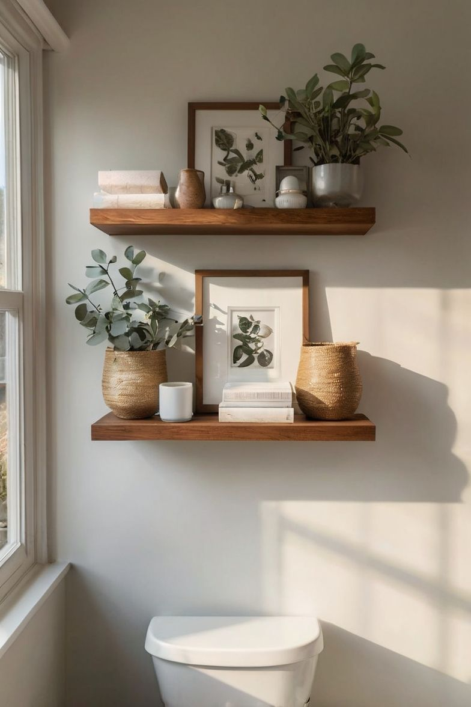
What You Should Avoid Above the Toilet
Styling this area sounds easy until you remember bathrooms come with moisture, cleaning, and very limited space to work with.
Skip anything that creates unnecessary clutter or makes cleaning around the toilet harder than it needs to be.
- Extremely deep shelves that stick out too far
- Heavy objects that could fall
- Fragile artwork sitting in a splash zone
- Too many tiny accessories all competing at once
- Anything that blocks the toilet lid from opening fully
- Materials that can't handle real bathroom humidity
- Open shelves stuffed completely full
Think about cleaning too. If you can't wipe around your decor easily, you'll eventually regret building a tiny museum above your toilet.
A good general test: if you can't picture yourself dusting it on a lazy Sunday, it probably doesn't belong up there.
How High Should You Actually Hang It?
This question comes up constantly, and the honest answer depends on the object.
For shelves, artwork, and mirrors, leave enough clearance above the tank that the whole arrangement feels comfortable, not squeezed against it.
Think about the lid too. Open it before you finalize anything and make sure nothing's going to interfere with its movement.
Before you drill a single hole, mark the approximate position with painter's tape. Step back and look at the whole wall.
Does it feel balanced with the toilet? Does it sit too high? Does it look too heavy?
Your eyes will usually answer those questions faster than a measuring tape ever could.
And if you're installing anything with real weight to it, find the studs first. A shelf full of baskets has no business hanging from drywall anchors alone.
1. Keep It Minimal on Purpose
Sometimes the smartest styling decision is doing less.
If your bathroom already has patterned tile, colorful wallpaper, dramatic lighting, or statement fixtures, piling on more decor above the toilet just makes everything compete.
Try one beautiful object instead.
A single large artwork, a simple mirror, or one floating shelf creates plenty of visual interest without cluttering the wall.
Plenty of designers genuinely prefer this approach, and deliberately keep attention away from the toilet itself. Opinions differ a lot on this, which really just proves there's no single rule you have to follow.
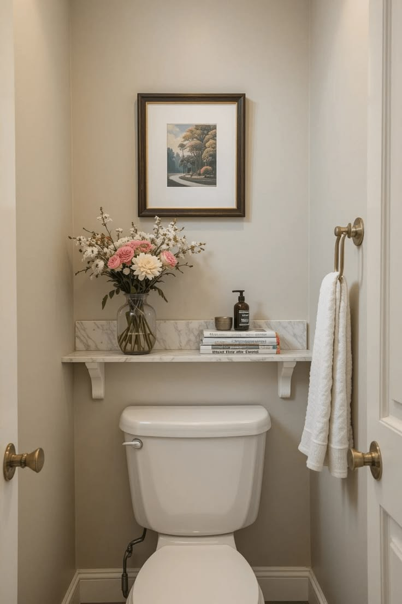
2. Go Bold in a Powder Room
A powder room gives you more freedom, since you don't need every decorative choice to be ultra-practical.
Try a bold framed print, dramatic wallpaper, an antique-style mirror, or a sculptural shelf above the toilet.
Powder rooms are exactly where designers tend to experiment with stronger colors, patterns, artwork, and detail.
This is where I'd personally take a few more risks.
A powder room can handle real drama. Your main bathroom probably wants a calmer conversation instead.
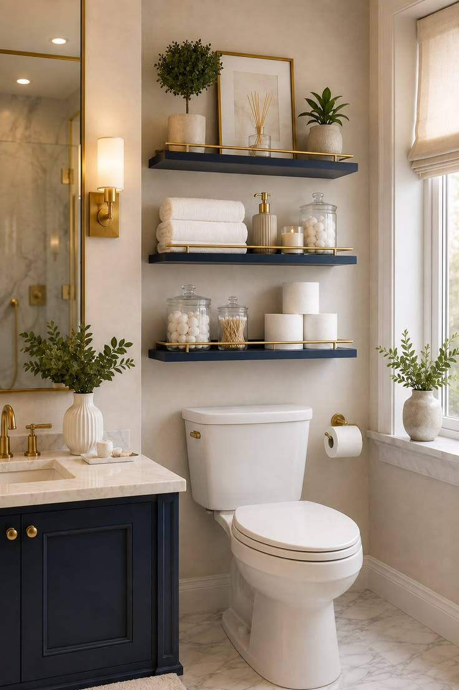
3. Bring In One Accent Color
Not every bathroom needs to live in beige.
If your bathroom already leans white, gray, or cream, add one strong accent color above the toilet. Sage green, dusty blue, terracotta, muted mustard, deep olive, any of these work.
Introduce it through artwork, ceramics, towels, or a small plant pot.
One accent color almost always creates more impact than five unrelated ones. Look at what color already shows up somewhere in the bathroom, and build from there.
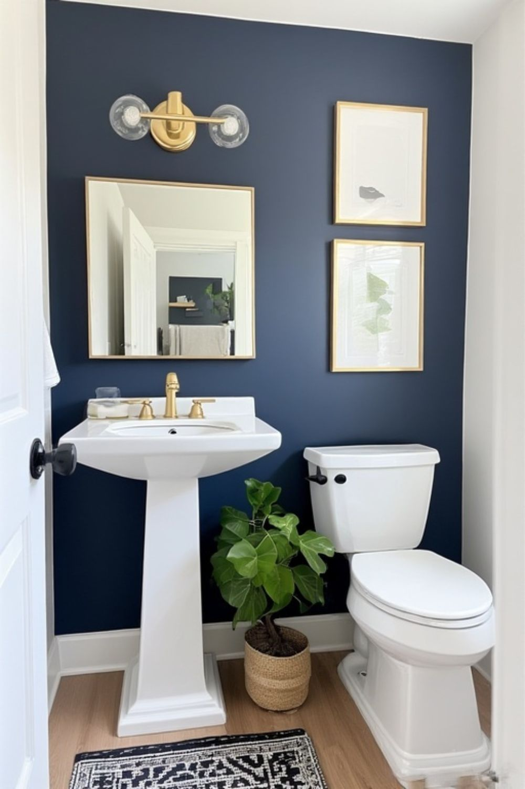
4. Install a Small Picture Ledge
A picture ledge gives you more flexibility than traditional wall art ever could.
Mount one above the toilet and lean several small frames against the wall. You can swap the artwork whenever you want, without drilling another hole.
This suits anyone who constantly changes their decor. Move between botanical prints, seasonal art, family photos, or abstract pieces without committing to one fixed arrangement.
Just keep the ledge secure, and avoid placing anything fragile where it could actually fall.
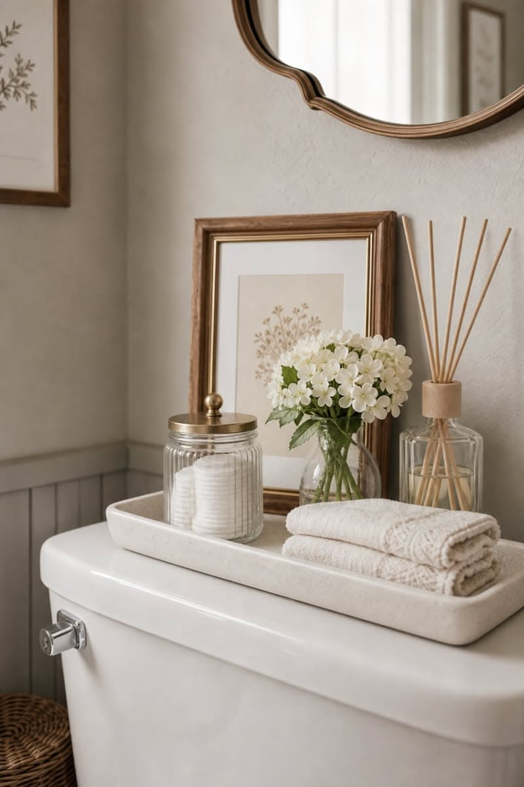
5. Go Black and White
Black and white decor gives you an easy formula for a polished-looking bathroom.
A black frame, a white ceramic vase, a black candle, and a small green plant. The contrast creates visual interest without introducing a bunch of competing colors.
This works especially well against white subway tile, black fixtures, marble, or anything already monochromatic.
And if you get bored of it later, you can swap the artwork or accessories without repainting a single thing.
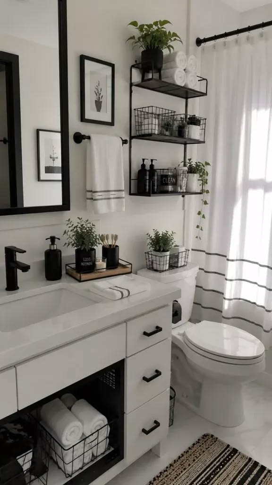
6. Use Ceramic Vases and Pottery
Ceramics add texture without taking up much space at all.
Arrange two or three small ceramic pieces above the toilet in different shapes but related colors. Cream, beige, terracotta, charcoal, muted green, all work beautifully in a neutral bathroom.
Leave them empty, or add a few dried stems.
This works especially well when you want the bathroom to feel collected rather than overly decorated.
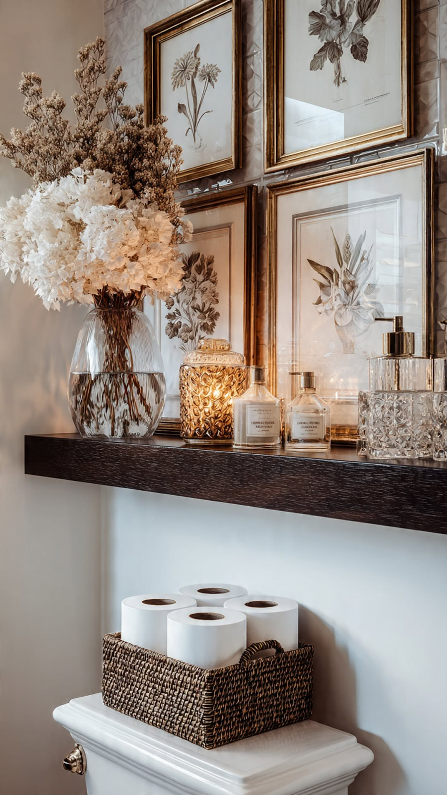
7. Add a Candle or Two
A candle can make a bathroom feel a lot more intentional.
Place one inside a ceramic, glass, or stone holder on a shelf above the toilet. Pair it with a small vase or object rather than building an entire candle collection.
I prefer understated scents here, linen, eucalyptus, cedar, sandalwood, nothing that fights with the room.
Just keep candles away from anything flammable, and never leave one burning unattended.
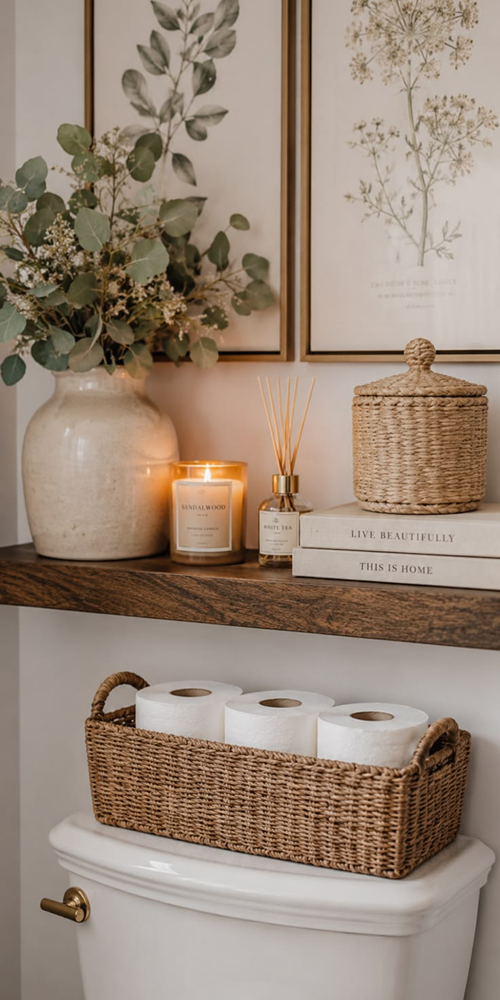
8. Add a Narrow Wall Cabinet
A wall-mounted cabinet gives you the best of both worlds: decoration and hidden storage.
Choose a narrow cabinet with doors, so you can hide the less glamorous bathroom essentials. The things nobody actually wants sitting out on display.
White cabinets work beautifully in a bright bathroom, while wood warms up a neutral space.
If the room feels cramped, go with a shallow depth and simple hardware.
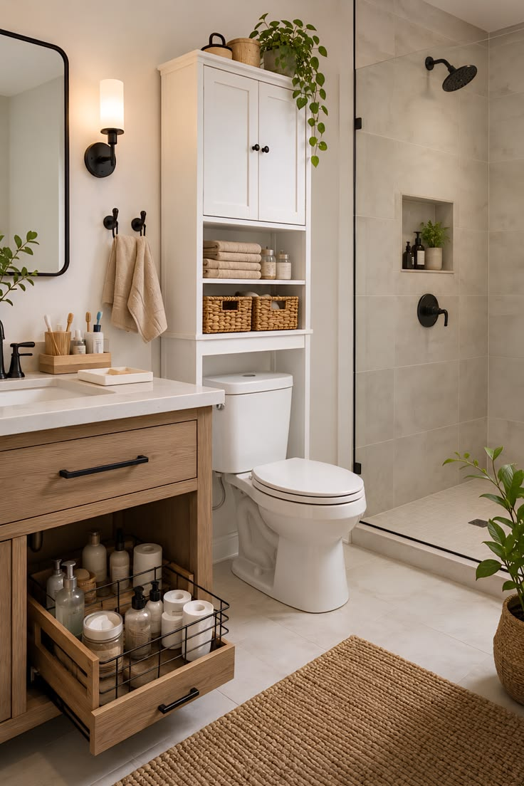
9. Build a Neutral, Spa-Like Display
If your dream bathroom looks like a calm boutique hotel, keep this styling simple.
Use a palette of white, beige, cream, taupe, warm wood, and soft green. Add one or two ceramic pieces, folded towels, a small plant, maybe a candle.
The secret is repetition. Repeat one or two colors from elsewhere in the bathroom, and the display feels connected to the rest of the room instead of separate from it.
A neutral palette like this also helps a small powder room avoid feeling visually chaotic.
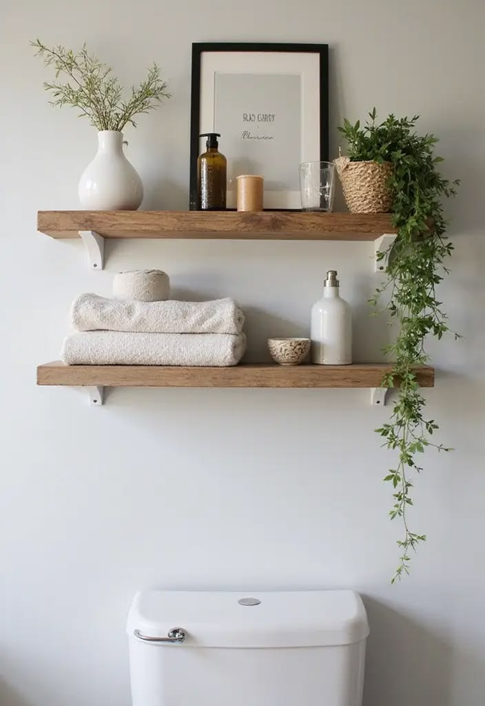
10. Install a Slim Shelf
A single long shelf gives you just enough space for useful items, without turning the whole wall into a storage station.
Install it a few inches above the tank and style it with a mix of practical and decorative pieces.
- A small vase
- Rolled hand towels
- A candle
- A ceramic container
- A small plant
- A framed print
This option works especially well when the wall width is limited.
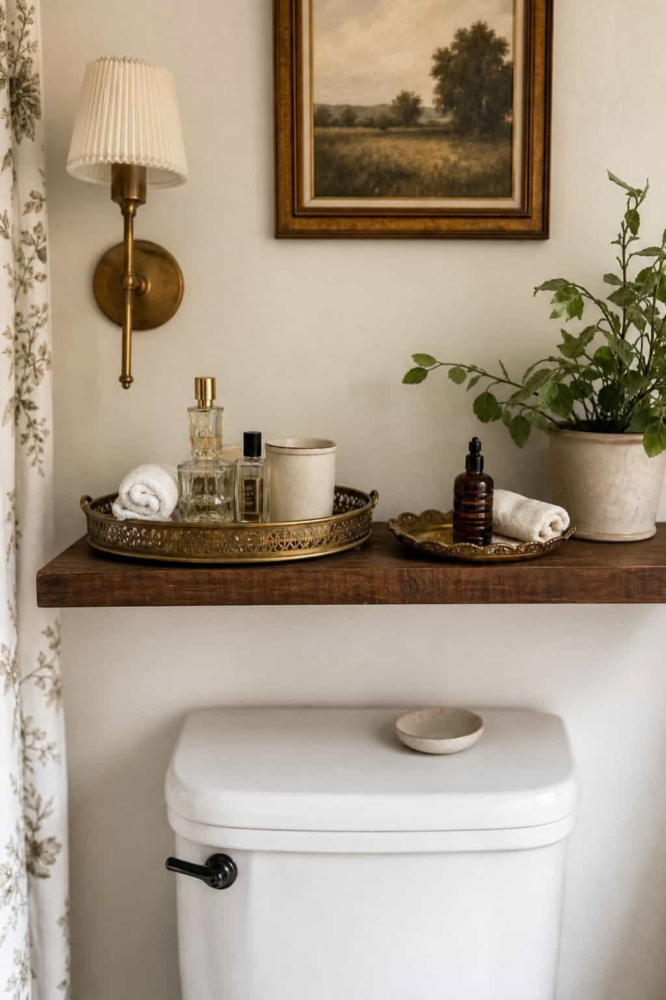
11. Wallpaper Behind the Toilet
Want maximum impact without adding a lot of objects? Change the wall itself.
Wallpaper above the toilet creates a strong focal point while the rest of the bathroom stays relatively simple. Botanical patterns, subtle stripes, vintage florals, geometric designs, textured neutrals, any of these work.
A small powder room gives you more permission to experiment here.
Plenty of designers lean on wallpaper specifically to give a powder room that immersive, jewel-box feeling.
If you do go bold with the wallpaper, keep the accessories simple. Let the wall do the talking.
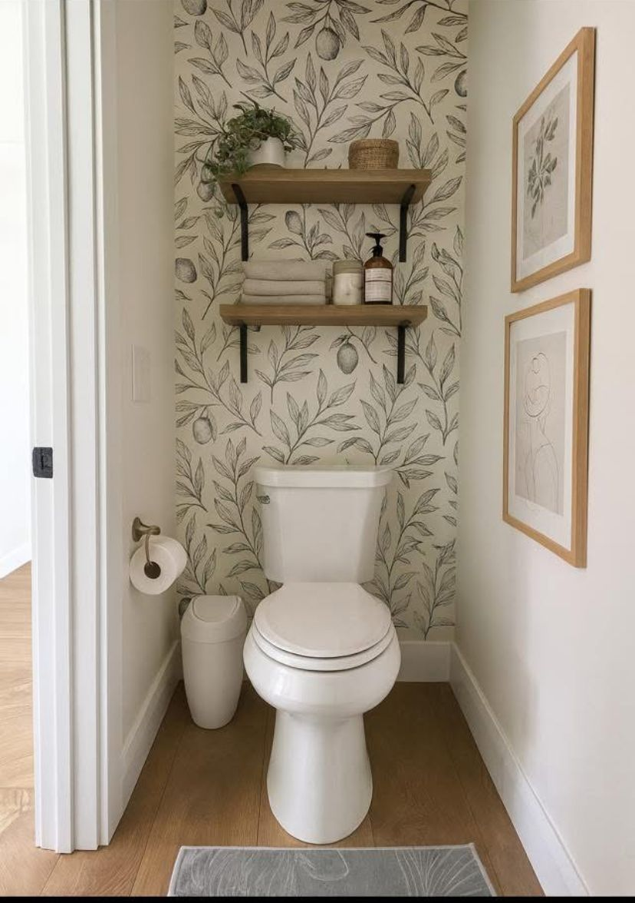
12. Hang an Oversized Vintage Frame
For a bathroom with real character, look past ordinary wall art.
An oversized vintage frame creates a genuine focal point above the toilet. Leave it empty, place a small piece of art inside it, or layer a smaller frame within the larger one.
- Antique-style gold frames
- Distressed wood frames
- Ornate black frames
- Carved natural wood
- Vintage architectural frames
This works particularly well in a powder room, since guests actually have time to notice the details.
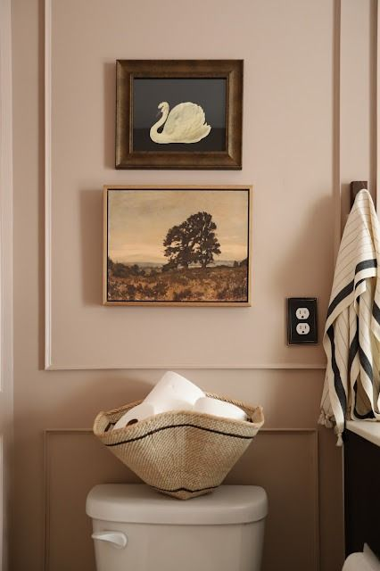
13. Try a Wooden Ladder Shelf
A ladder-style shelf gives your above-toilet decor a relaxed, slightly rustic feel.
Choose a slim one that sits close to the wall. Use its levels for rolled towels, baskets, small plants, and a few decorative pieces.
This works especially well in a farmhouse, cottage, Scandinavian, or relaxed neutral bathroom.
Avoid filling every single level. Leaving some space empty helps the whole arrangement breathe.
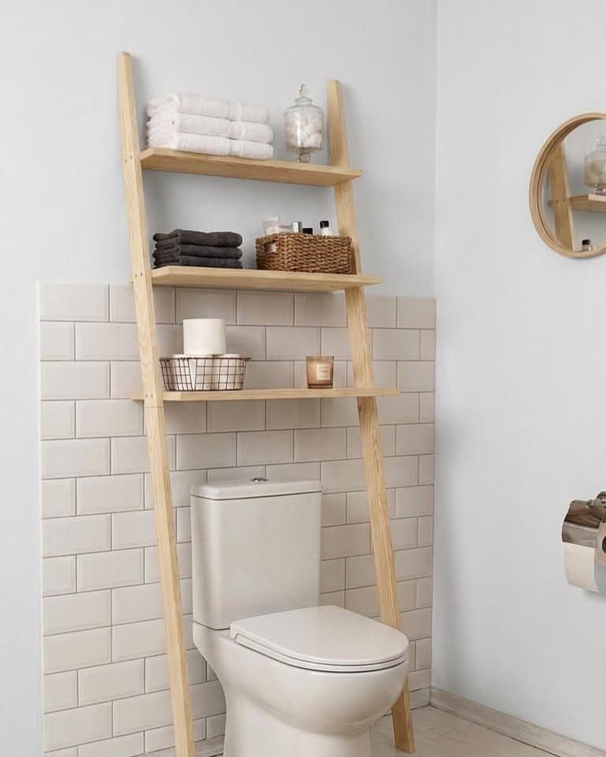
14. Add a Small Plant
Plants can completely change the mood of a bathroom.
A small pothos, snake plant, fern, or trailing variety brings real life to an otherwise hard-looking space. Set one on a shelf above the toilet, or use a small hanging planter if your layout allows it.
Just make sure whatever you choose can actually handle the bathroom's light and humidity.
No natural light in there? Go with a realistic faux plant instead. There's no decorating medal for keeping a dying plant alive in a windowless bathroom.
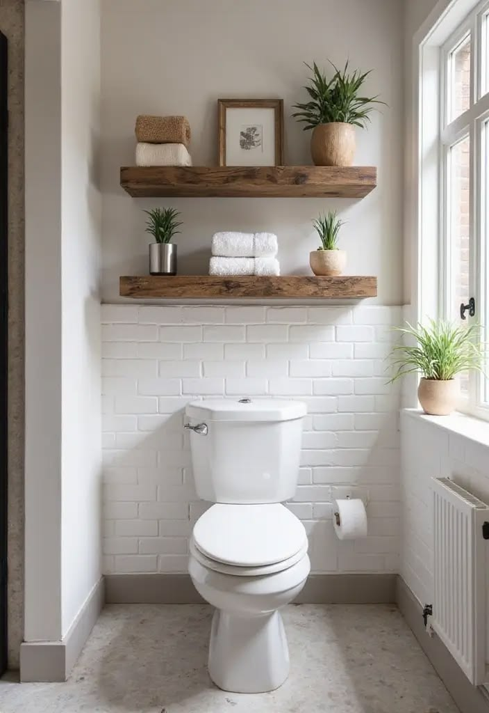
15. Style It With Woven Baskets
Want storage that looks warm instead of clinical? Add woven baskets above the toilet.
Place two or three on open shelves and use them to hide spare toilet paper, towels, toiletries, or other small supplies. Natural fiber softens a bathroom that's otherwise full of tile, porcelain, glass, and metal.
Choose baskets with slightly different sizes but similar textures. That gives the arrangement some personality without tipping into chaos.
In a small bathroom, go shallow so you can still reach everything easily.
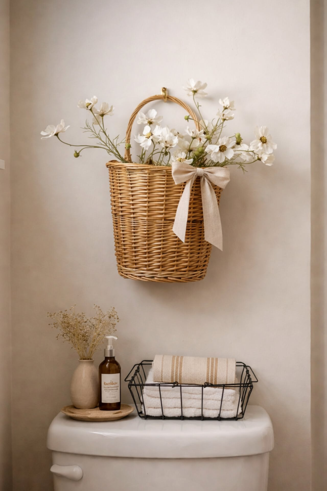
16. Install a Recessed Cabinet
If your bathroom desperately needs storage, skip the purely decorative route and make the wall actually work for you.
A recessed cabinet above the toilet holds extra toilet paper, toiletries, cleaning supplies, and other essentials without eating into floor space.
A recessed design also looks cleaner, since the cabinet sits within the wall instead of projecting out into the room.
This has been a go-to move for designers maximizing square footage in genuinely compact bathroom renovations.
It takes more work than hanging a shelf, but it can make a surprisingly big difference.
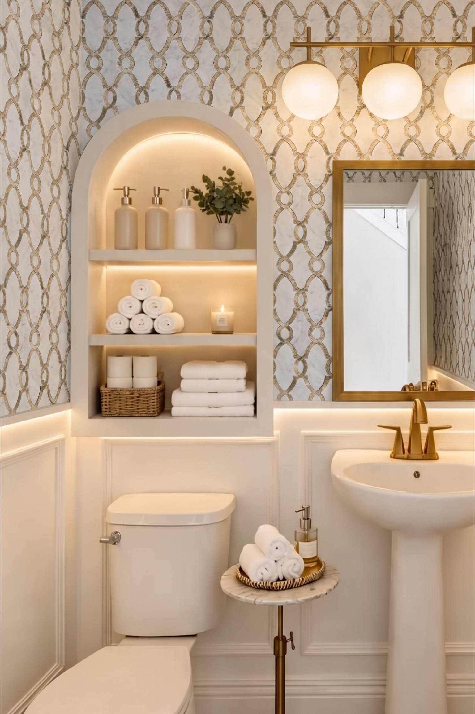
17. Hang a Decorative Mirror
A mirror can do a lot more than just show you whether your hair survived the morning.
A decorative mirror above the toilet reflects light and creates the impression of more space, especially in a small bathroom. Go round for something softer, or rectangular and framed for a more structured look.
Aged brass, warm wood, and black frames all give a simple bathroom more character.
Mirrors are genuinely one of the best tools for bouncing light, filling an awkward wall, and making a small bathroom feel bigger.
No natural light in the room? A mirror becomes even more useful.
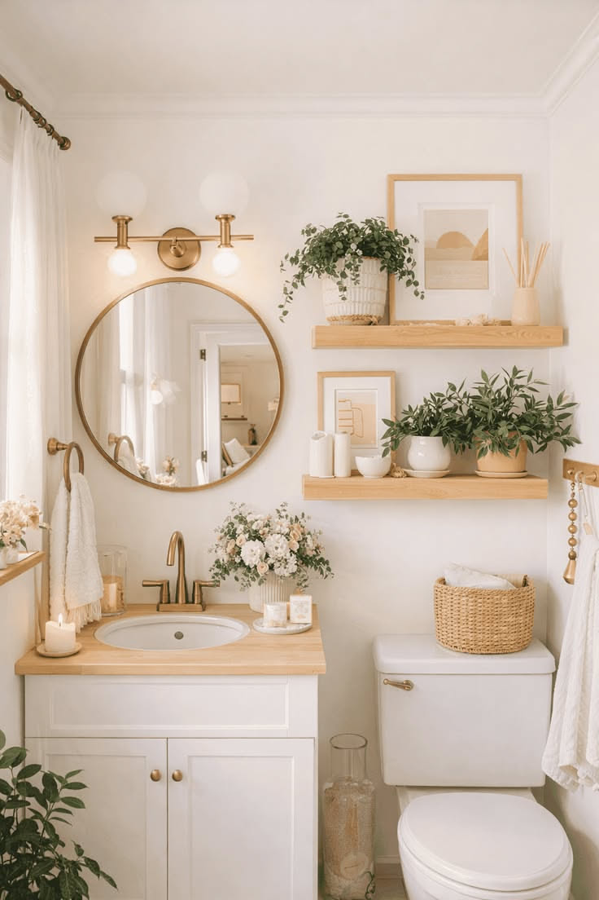
18. Hang One Large Framed Print
You don't always need a full gallery wall.
Sometimes one large piece of art looks far more sophisticated than several small ones. Choose a frame that fills enough of the wall, without touching the ceiling or making the toilet look tiny by comparison.
Try a muted landscape, an abstract print, an oversized botanical, or something vintage-style.
In a narrow bathroom, a vertical print emphasizes the height of the wall. A wider wall can handle a horizontal one better.
The trick is choosing the art first, then resisting the urge to add six more things around it.
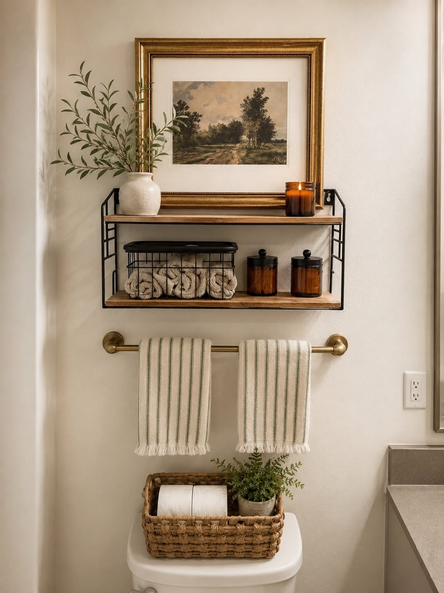
19. Build a Small Gallery Wall
Who says a bathroom wall can't have personality?
A small gallery wall makes the space above your toilet feel like part of a designed room, rather than just a functional bathroom. Mix two or three framed prints in different sizes while keeping one consistent color palette.
- Botanical prints
- Vintage architectural sketches
- Black and white photography
- Abstract artwork
- Small vintage-inspired illustrations
Botanical art is a personal favorite of mine here, since it brings in organic shapes without making the room feel visually busy.
Art in general adds real warmth and personality to a bathroom, especially one that otherwise relies on hard surfaces and purely functional fixtures.
That feels especially true right above a toilet.
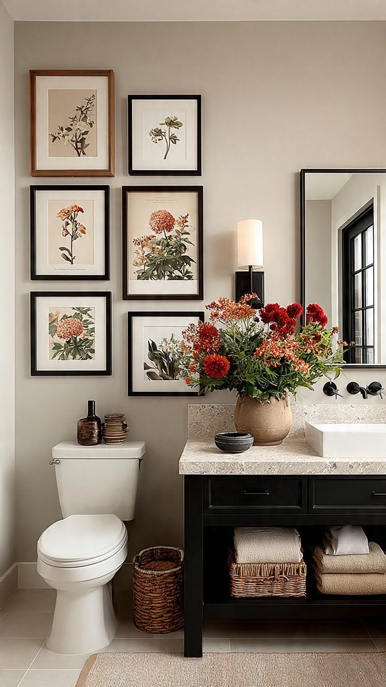
20. Finish With Floating Shelves
Floating shelves rank among my favorite ways to style this space, since they combine decoration and real storage in one move.
Install two or three narrow wooden shelves above the toilet and use them for folded towels, small baskets, candles, plants, and a few decorative objects. Keep them relatively shallow, so they don't visually overwhelm the toilet below.
I usually reach for natural wood in a bathroom, since it adds instant warmth against cold tile and white fixtures. If your bathroom already leans toward black hardware, try a dark-stained shelf instead.
Keep the styling light. A bathroom shelf doesn't need fifteen accessories all competing for attention at once.
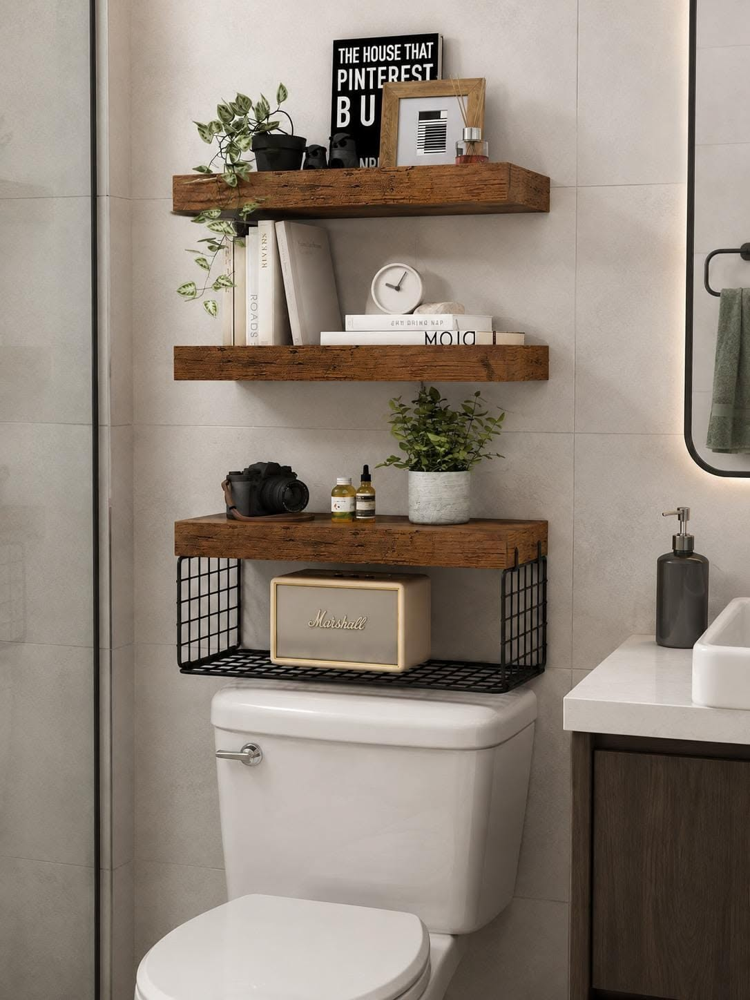
So What Actually Looks Good Up There?
Before you start hanging random shelves and buying baskets, think about what your bathroom genuinely needs.
Need storage? Add shelves or a cabinet. Want the room to feel softer? Add artwork, wood, or greenery. Does the wall just look painfully empty? A large mirror or a framed print solves that in minutes.
Scale matters too. A tiny frame floating alone above a large toilet looks lost. An enormous cabinet can make a small bathroom feel cramped instead.
Using vertical space well, including floating shelves installed right above the toilet, is one of the most repeated pieces of advice for small bathrooms specifically.
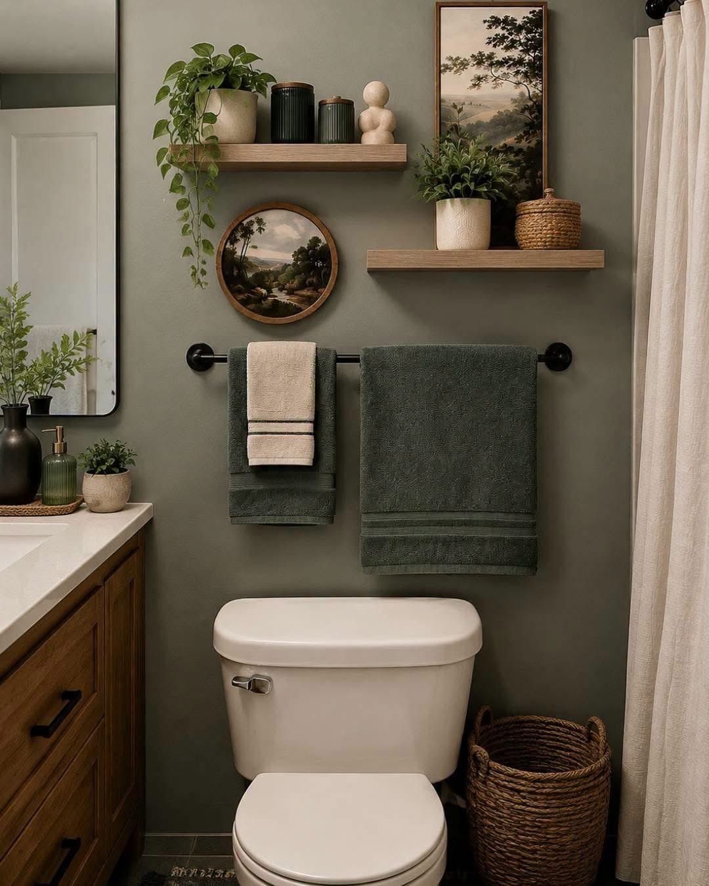
Why Bother Styling It At All?
The wall above the toilet often becomes an accidental dead zone.
You've got a perfectly usable vertical surface, but because the toilet already takes up the lower part of the wall, most people just leave everything above it empty.
That can work in a genuinely minimalist bathroom, but most bathrooms benefit from a little visual interest. Above-toilet decor can add storage, color, texture, personality, or just make a small bathroom feel more finished overall.
Designers take very different approaches here. Some prefer to visually minimize the toilet entirely, while others happily style the tank area with flowers, candles, and small decorative pieces.
Honestly, that sums up the whole debate. You don't have to decorate the space, but you absolutely can, as long as the arrangement feels intentional rather than accidental.
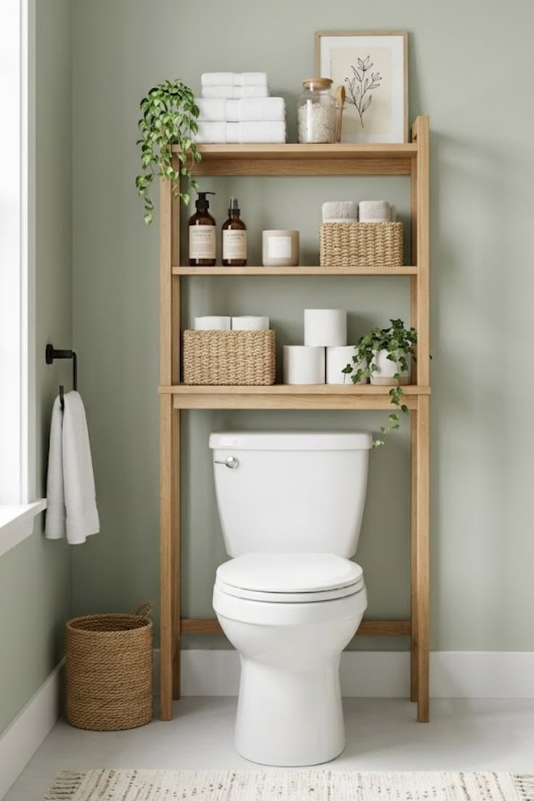
Start With One Thing
The best ways to style above the toilet don't just fill an empty wall. They give the bathroom something it was actually missing: storage, warmth, color, texture, or personality.
Install floating shelves. Hang artwork. Add a mirror. Bring in plants. Use baskets. Mount a cabinet. Or keep the whole thing beautifully minimal.
What matters is matching the solution to your actual bathroom. A tiny powder room might benefit from bold wallpaper and one statement piece, while a busy family bathroom probably needs practical storage instead.
And remember, you don't have to decorate every available inch. Sometimes one beautiful shelf looks better than a wall full of stuff.
So before you walk back into your bathroom and stare at that empty wall again, ask yourself one simple question: what would actually make this space feel more like you?
Start there. The toilet can handle the rest.
And give yourself permission to change your mind in six months. None of this is permanent, and most of it can come down in an afternoon if it stops working for you.